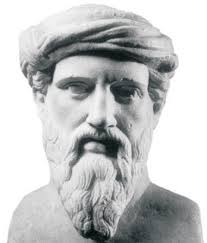

Figura 1
Seu sistema ético está interconectado com os deuses, sugerindo uma crença na influência divina na moralidade humana.
Xenofonte

Figura 2
Defendia a busca pelo conhecimento através do método de questionamento e reflexão, conhecido como a maiêutica.
Sócrates
Figura 3
-Em sua teoria cosmológica, defendeu que a Terra é plana e estaria flutuando no ar
-Tudo o que existe, inanimado ou animado, era composto por ar
Anaxímenes
Figura 4
Acreditava na unidade do ser em detrimento da pluralidade e defendia que o espaço de uma trajetória pode ser infinitamente divisível em segmentos menores.
Zanão

Figura 5
-Aponta que a possível origem para o Universo seria um elemento infinito, indefinível e imortal, que ele chamou de ápeiron.
Anaxímandro
Figura 6
-Acreditava que após a morte, os átomos de sua alma espalham-se para todas as direções e podem se agregar a outra alma, no mesmo momento em que esta é formada.
Demócrito
Figura 7
Defendia que o ser humano não deveria procurar mais que o necessário (alimento, água e o mínimo abrigo do Sol e do relento) para viver bem.
Diógenes

Figura 8
Matemático e astrônomo; Formulou o teorema de Tales e afirmava ser a água o princípio de todo o Universo.
Tales de Mileto
Figura 9
Defendia a liberdade de religião e de pensamento. Acreditava que o Universo era regido por leis matemáticas.
Hipátia
Figura 10
Defendia que a ideia das coisas, seriam puras e perfeitas. Trata-se de um conhecimento inteligível, alcançado somente com a razão.
Platão
Figura 11
-De acordo com esse filósofo, o quadrado da medida da hipotenusa é igual à soma dos quadrados das medidas dos catetos.
Pitágoras
Figura 12
-Afirmou que o Universo é composto por sementes que se agregam ou se desagregam por meio de uma inteligência que governa tudo.
Anaxágoras
Figura 13
Segundo o filósofo, a filosofia é essencialmente deve decifrar o enigma do universo, em face do qual a atitude inicial do espírito é o assombro do mistério.
Aristóteles
Figura 14
Afirma que existiam seres invisíveis por serem indivisíveis e conhecidos apenas pelo raciocínio. Esses seres eram os verdadeiros elementos que formavam tudo o que existe.
Leucipo

Figura 15
Defende que não há unidade natural no mundo. “O mundo é um eterno devir”, querendo dizer que há uma constante mudança, imprevisível, que caracteriza a natureza.
Heráclito

Figura 16
Uma certeza sobre o principal diferencial do filósofo em relação aos outros cosmólogos de sua época é que o pensador apontou quatro elementos: terra, fogo, água e ar.
Empédocles
Figura 17
Considera que o pensamento humano pode atingir o conhecimento genuíno. Essa percepção do domínio do "ser" corresponde às coisas que são percebidas pela mente.
Parmênides
Figura 18
Defende que a sabedoria e a filosofia são realidades inseparáveis; o segundo, que tanto a filosofia como a sabedoria fazem parte da substância da educação.